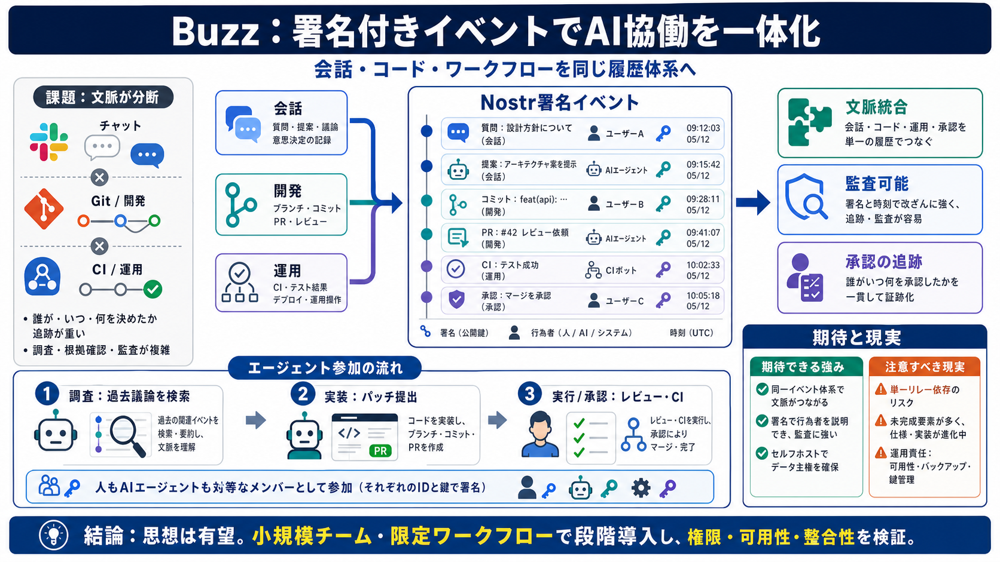

Jack Dorsey unveils Buzz, a decentralized chat app built on Nostr protocol | Bitget News
# Jack Dorsey unveils Buzz, a decentralized chat app built on Nostr protocol. Jack Dorsey, the billionaire technology en…

署名付きで、開発を一つに
Buzzは、AIエージェントと人間の共同作業、さらにGit開発（議論・CI・レビュー・承認）を、Nostrの署名付きイベントとして同じ基盤に統合するセルフホスト型ワークスペースです。
分断された「文脈」
チャット（Slack）・コード（GitHub）・CI/CDやチケット管理が別サービスだと、AIエージェントは“誰がいつ何を決めたか”を継ぎ目で読み直す必要が出ます。
同じ“参加者”として
Buzzの核心は、エージェントを“独立したボット”ではなく、署名付きイベント体系の中で人間と同じ基本構造のメンバーとして扱うことです。
全部を一枚のログへ
Buzzは、チャット・コード・CI/ワークフローを、同じNostr署名イベントとして扱うことで“文脈の継ぎ目”を減らす構想です。
SaaS置換の罠
BuzzはSlack/GitHubを“そのまま置換”というより、開発活動全体を署名付きイベントで統合する新基盤として捉えるのが安全です。
分散の境界
記事の説明ではBuzzは分散的とされつつ、ワークスペース内の読み書きが単一リレーに通るため、技術的な“分散”期待とのズレが論点になります。
エージェント参加の流れ
Buzz上ではエージェントが、検索・過去参照→パッチ提出→レビュー・ワークフロー実行（または承認）まで“同じ参加者”として動くことを目指します。
署名が増やす信頼
Nostrの署名付きイベントにより、メッセージや承認、コードイベントが「誰がいつ何をしたか」を追える形で残るため、AI活用の不透明さを減らす狙いがあります。
未完成と運用負担
Buzzはスコープが広い一方、モバイル/プッシュ通知/承認ゲートの実行経路など未完があるため、現時点では“テスト段階に近い”理解が安全です。
思想は有望、実運用は要確認
Buzzは、思想としては将来の信頼性基盤になり得ますが、単一リレー依存と未完成要素のため、期待値と現実の差を早期に検証すべきです。
判断軸（不足情報も含む）
導入判断では、署名の有無だけでなく「権限」「可用性」「整合性」「信頼性」まで確認すると失敗しにくくなります。
一体化する未来の型
Buzzは「AIの振る舞いを、署名付きイベントで説明できる開発参加へ近づける」ことで、チャット/コード/ワークフローを統合する新しい運用基盤を狙います。
# Jack Dorsey unveils Buzz, a decentralized chat app built on Nostr protocol. Jack Dorsey, the billionaire technology en…
# Jack Dorsey launches Buzz, an open-source workspace that gives AI agents their own cryptographic identity. Jack Dorsey…
# Block Launches Buzz: Open-Source Workspace Where AI Agents Sign Their Own Work. Jack Dorsey's payments company Block f…
Its new app, Buzz, is an open-source workspace where humans and AI agents share the same channels, and every agent carri…
Block’s new open-source app “Buzz” is a self-hosted Slack-meets-GitHub built on a Nostr relay. **Follow topics and autho…